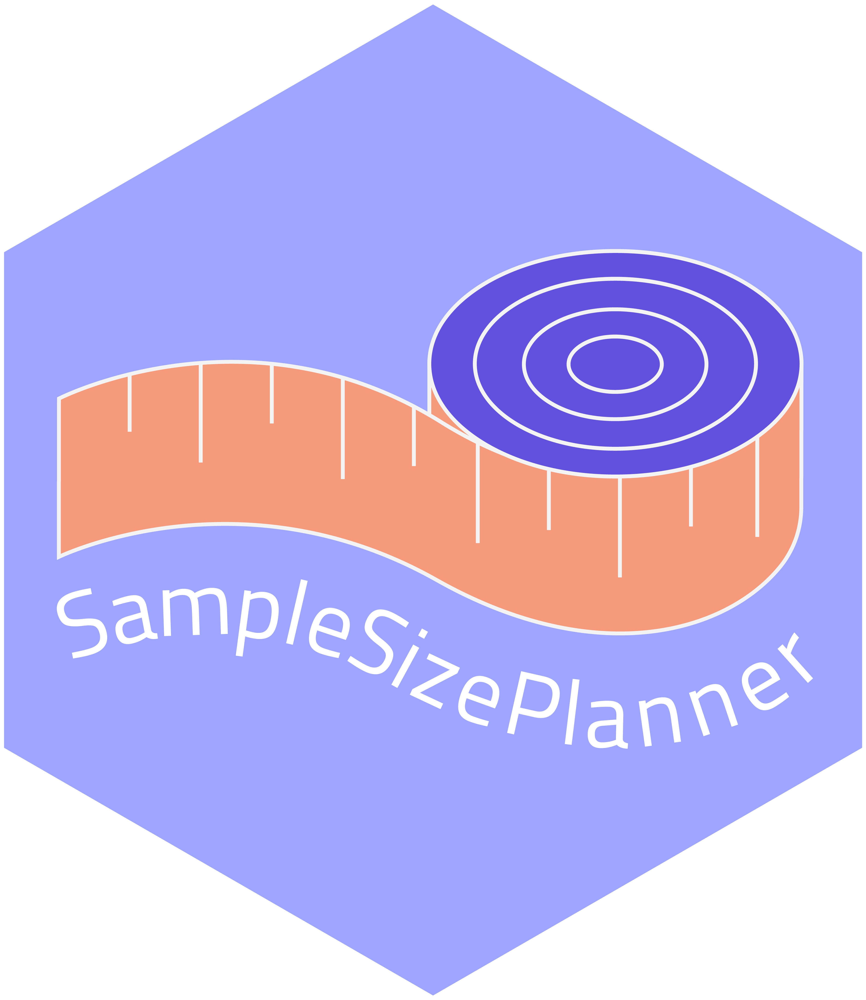

SampleSizePlanner 
The goal of SampleSizePlanner is to help researchers determine the sample size for two group designs. The present application and R package offers 9 different sample size planning methods. In addition, the web application allows users to create a justification report for their sample size plan.
Available sample size planning methods
- Two One‐Sided Tests (TOST)
- Interval Equivalence Bayes factor
- Classical power analysis
- Power curve
- Bayes Factor Design Analysis (BFDA)
- Predetermined sample size with Bayes factor
- Accuracy In Parameter Estimation (AIPE)
- A-priori precision (APP)
- Region of Practical Equivalence (ROPE)
Usage
SampleSizePlanner can be used either via the web app or via R.
Using the web app
You can use the app at https://martonbalazskovacs.shinyapps.io/SampleSizePlanner/.
You can alternatively run the app locally on your own computer by following these instructions:
Install the development version (SampleSizePlanner is not available from CRAN) from GitHub with:
# install.packages("devtools")
devtools::install_github("marton-balazs-kovacs/SampleSizePlanner")Running the app.
SampleSizePlanner::run_app()Using the package
You can use the R package to determine the sample size with any of the 9 methods that present in the web app. However, it is not possible currently to generate a justification report from the R package. Please see the tutorial paper or the web app for example sample size justifications for each method.
Note
The tutorial paper that presents the web application and R package is not reviewed yet. More details are available in Kovacs, van Ravenzwaaij, Hoekstra & Aczel (2021).
Code of Conduct
We are open to new ideas and feature requests.
Please note that the SampleSizePlanner project is released with a Contributor Code of Conduct. By contributing to this project, you agree to abide by its terms.